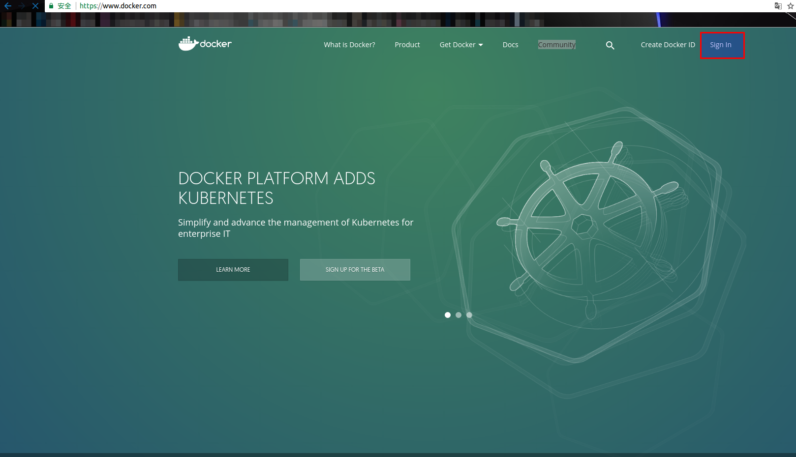
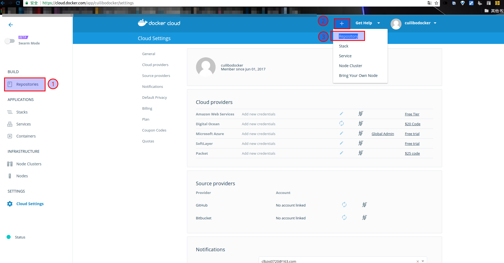
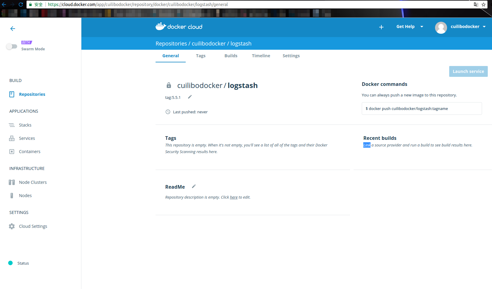
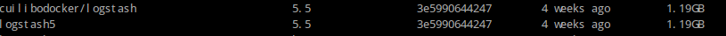
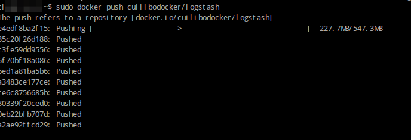
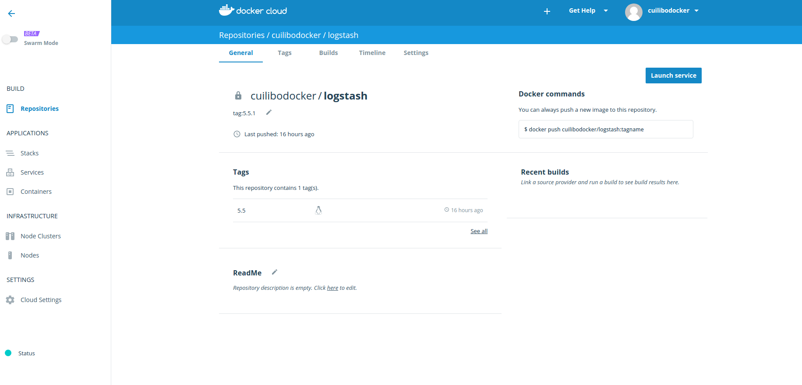

＃ docker往自己的docker cloud仓库上传镜像
1 登陆docker地址
docker hub地址为[https://www.docker.com/]

2 自行注册成功之后，继续下面的教程。（因为是国外网站，访问会很慢，耐心等待页面加载。）

3 注册成功之后，点击repositories。再点击create创建你自己的远程仓库

记住你的远程的镜像名，因为等会要用到。点击create，耐心等待，可以会加载失败，重新创建即可。访问外网确实很卡1
2[root@clb ~]#docker start
[root@clb ~]#docker images
查看到自己的镜像文件后，我们开始尝试上传到远程仓库1
2
3
4
5[root@clb ]# docker login
输入你的账号名
输入你的密码
输入你注册时的邮箱
login success
现在修改你的镜像文件标签，标签如果和你在hub上的不一致，你是不可能上传成功的1
2[root@clb ]# docker tag logstash5:5.5 cuilibodocker/logstash:5.5
[root@clb ]# docker images

现在终于可以上传到自己的hub上了1
[root@clb ]# docker push cuilibodocker/logstash

最后，去docker hub上看一眼是否成功
